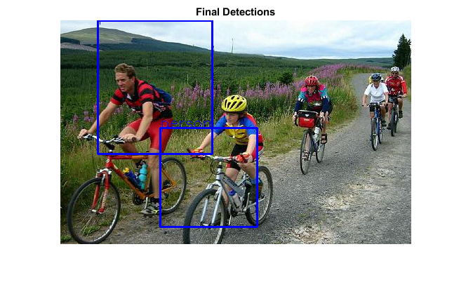

Object Detection using Convolutional Neural Networks
An example of how to use the SqueezeDet model to predict object bounding boxes.
The SqueezeDet model was trained for Object Detection.
- This model was trained for 180000 iterations with a batch size of 16
- Size of the Model: 14.2MB
- Trained weights can be found here
For details pertaining to the usage of the model, have a look at this repository. You can infact train your own object detection models with the loss function which is implemented (in Caffe).
By default this model thresholds the detections at confidence of 0.7. While filtering there are number of bounding boxes which are predicted, you can manually control what gets thresholded by passing the value of optional arguement Threshold.
The model is incredibly fast taking just 0.172091 seconds on average to predict multiple bounding boxes.
References:
Sources:
load the network along with its trained weights
[net, blobOpts] = SqueezeDet();
assert(~net.empty(), 'Could not load model');load test image
im = fullfile(mexopencv.root(), 'test', 'rgb.jpg'); img = cv.imread(im, 'Color',true, 'FlipChannels',false);
convert the image into blob
blob = cv.Net.blobFromImages(img, blobOpts{:});forward through the network and collect output blobs
tic net.setInput(blob); out = net.forwardAndRetrieve('slice'); delta_bboxs = out{3}; % 1x23x23x36 net.setInput(blob); out = net.forward({'softmax', 'sigmoid'}); class_scores = out{1}; % 1x4761x20x1 conf_scores = out{2}; % 1x23x23x9 toc
Elapsed time is 0.978069 seconds.
reshape blobs
if true delta_bboxs = reshape(delta_bboxs, [23 23 36]); class_scores = reshape(class_scores, [4761 20]); conf_scores = reshape(conf_scores, [23 23 9]); else % NHWC -> HWCN delta_bboxs = permute(delta_bboxs, [2 3 4 1]); class_scores = permute(class_scores, [2 3 4 1]); conf_scores = permute(conf_scores, [2 3 4 1]); end
the three blobs are post-processed to get the bounding boxes predicted
dets = cv.InferBbox(delta_bboxs, class_scores, conf_scores, 'Threshold',0.7);show detections
xy_ratio = [size(img,2), size(img,1)] ./ [416 416]; % blobOpts.Size out = flip(img, 3); for i=1:numel(dets) % adjust coordinates to original image size dets(i).bbox = round(double(dets(i).bbox) .* [xy_ratio xy_ratio]); fprintf('#%d\n', i); fprintf(' Class: %s\n', dets(i).label_name); fprintf(' Probability: %f\n', dets(i).class_prob); fprintf(' Coordinates: [%d %d %d %d]\n', dets(i).bbox); % draw the corresponding bounding box out = cv.rectangle(out, dets(i).bbox(1:2), dets(i).bbox(3:4), ... 'Color',[0 0 255], 'Thickness',2); out = cv.putText(out, dets(i).label_name, dets(i).bbox(1:2), ... 'FontScale',0.7, 'Color',[0 0 255]); end imshow(out), title('Final Detections')
#1
Class: person
Probability: 0.916116
Coordinates: [142 153 280 294]
#2
Class: person
Probability: 0.843427
Coordinates: [53 0 216 190]
Pretrained models
function dname = get_dnn_dir(dname) %GET_DNN_DIR Path to model files, and show where to get them if missing dname = fullfile(mexopencv.root(), 'test', 'dnn', dname); b = isdir(dname); if ~b % display help of calling function % (assumed to be a local function in current file) st = dbstack(1); help([mfilename() filemarker() st(1).name]) end assert(b, 'Missing model: %s', dname); end function [net, blobOpts] = SqueezeDet() %SQUEEZEDET SqueezeDet model trained on PASCAL VOC Dataset [Caffe] % % homepage = https://github.com/kvmanohar22/caffe % homepage = https://kvmanohar22.github.io/GSoC/ % homepage = https://github.com/opencv/opencv_3rdparty/tree/dnn_objdetect_20170827 % homepage = https://github.com/opencv/opencv_contrib/tree/3.4.1/modules/dnn_objdetect/samples/data % % ## Model % % file = test/dnn/SqueezeDet/SqueezeDet_deploy.prototxt % url = https://github.com/opencv/opencv_contrib/raw/3.4.1/modules/dnn_objdetect/samples/data/SqueezeDet_deploy.prototxt % hash = 797d33d3acc0935618da0f594b6019d09b1b36b9 % % ## Weights % % file = test/dnn/SqueezeDet/SqueezeDet.caffemodel % url = https://github.com/opencv/opencv_3rdparty/raw/dnn_objdetect_20170827/SqueezeDet.caffemodel % hash = 378ab040bc717f2b7fc57f9254892bdd2d597476 % size = 14.1 MB % dname = get_dnn_dir('SqueezeDet'); net = cv.Net('Caffe', ... fullfile(dname, 'SqueezeDet_deploy.prototxt'), ... fullfile(dname, 'SqueezeDet.caffemodel')); blobOpts = {'SwapRB',false, 'Crop',false, 'Size',[416 416], 'Mean',[104 117 123]}; end